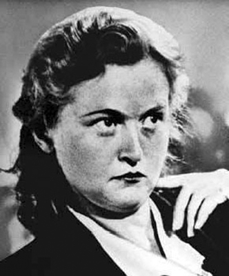
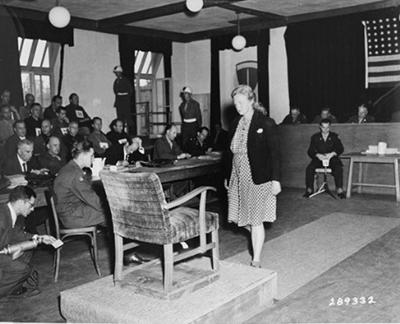

“Bu kadın, Nazi savaş suçlularının en sadistlerinden biriydi. Herhangi bir yerde bir çığlık duysanız, bunun, onun işkenceyle öldürdüğü masum insanlara ait olduğuna emin olabilirdiniz.”
Ilse Koch davasının savcısı, 1951
Hitler, Avrupa’yı çizmelerinin altında çatır çatır ezerken, bu çizmeleri zevkle parlatan cellatlardan biri de bir kadındı: Ilse Koch. Şimdi okuyacaklarınız, insanın kanını donduran cinayetleri gözünü bile kırpmadan işleyen bu hastalıklı ruhun hikâyesidir...
Göreve geldiği andan itibaren Hitler, Nazilerle birlikte toplumdaki tüm ‘istenmeyen unsurlardan’ kurtulmanın ve böylece üstün Aryan ırkını oluşturmanın yollarını aradı. Bu istenmeyen unsurlar Yahudileri, Çingeneleri, zihinsel veya fiziksel özürlüleri, eşcinselleri ve aydınları; kısacası safkan Alman ırkına giden yolda engel oluşturan herkesi kapsıyordu. Aslında, ilk olarak bunların sürgün edilmesi düşünüldü, ancak İkinci Dünya Savaşı esnasında karada, denizde ve havada kıran kırana savaşan Almanya’nın ‘ince işler’ için zamanı yoktu: Nazi ölüm makinesi devreye sokuldu.
Almanların ‘gözlerine batan’ fazlalıklara yönelik katliamları esnasında bir kadın, bu kıyımları görevden daha öte bir anlayışla, adeta aşkla benimseyecekti. Bu kadın Buchenwald Kumandanı’nın karısı Ilse Koch’tan başkası değildi. Sadist ve cinsellik düşkünü kadın, mahkûm erkeklerin, kadınların ve çocukların çektiği eziyetten zevk alıyor, onları işkenceyle öldürmeden önce, iğrenç cinsel ilişkilere zorluyordu. Evini, öldürülen mahkûmların derilerinden yapılan küçültülmüş kafalar ve abajurlarla süslüyordu! İnanılmaz derecede hasta bir ruha sahip olan bu kadın adını tarihe, ‘Buchenwald Cadısı’ olarak yazdıracaktı. Peki, kimdi bu kadın?
Ilse, 1906 yılında Saksonya kırsalındaki Dresden’de bir işçi ailesinin çocuğu olarak dünyaya gelmişti. Okul yıllarında iyi bir ailenin sakin ve terbiyeli kızı olarak bilinen Ilse’nin bir özelliği dikkat çekiyordu: Erkeklere aşırı derecede düşkündü. On beş yaşında okulu bırakınca bir fabrikada işçi olarak çalışmaya başladı, kısa bir süre sonra da bir kitapçıda iş buldu.
Bu sırada Almanya ciddi bir ekonomik durgunluk yaşıyordu. Ülke Birinci Dünya Savaşı’nın yol açtığı yıkım dolayısıyla zor durumdaydı. Kriz eşiğinden geçen ülkeler, her türlü aşırılığa elverişli bir tarla gibi olurdu ve bu kural, Almanya için de işlemeye başlamıştı. Saksonya’nın bereketli topraklarında, çok ama çok zehirli bir çiçek yetişmek üzereydi...
Ilse, çevresindeki tekdüzeliğin de etkisiyle, etrafında gelişmekte olan yeni ve güçlü çekim merkezini fark etmekte gecikmedi. Bu cazibe odağı, 1930’ların başında Nazi Partisi olarak kendini göstermeye başlamıştı.
Genç, güzel, sarışın Ilse, kitapçıya gelen Nazi subaylarının dikkatinden kaçmıyordu. Çok geçmeden işi ilerletip, partinin ve Alman gizli polisinin (Gestapo) önde gelen üyeleriyle ilişki yaşamaya başladı. İlişkilerini kullanarak kısa sürede partide sekreter olarak çalışmaya başladı. Gestapo’nun başı ve Hitler’in baş cellatlarından Heinrich Himmler’in, güzel sekreteri fark etmesi uzun sürmedi. Hayalini kurdukları safkan ırk için, genç, güzel, sağlıklı ve ‘sarışın’ Alman kadınlarına ihtiyaçları vardı. Ilse’nin, başyardımcısı Karl Koch’la evlenmesini istedi. Partinin temel hedeflerinden olan Aryan ırk göz önünde bulundurulduğunda, Ilse ve Karl ideal bir çiftti. Aslında Karl Koch eşinden boşanmış ve iflas etmiş bir banka memuruydu. Diğer bir deyişle, kendine yeni bir heyecan arayan, savaş yorgunu bir ruhtu... Nazilere 1931’de katılmış ve kısa sürede yükselip SS (Schutzstaffel, Koruma Takımı) Örgütü’nün en önemli üyelerinden biri olmuştu.
Verilen görevleri kendine has acımasız yöntemler uygulayarak yerine getirmesi amacıyla SS’i hayata geçiren Hitler, geleneksel olan her şeyi tuzla buz etmeyi çok seviyordu. Dizginleri ele geçirdikten sonra çok sayıda insanı silahaltına aldı. Aryan ırkının mensupları, daha iyi bir hayat vaadiyle askere davet edilmişti.
Karl Koch mükemmel bir adaydı. Berlin yakınlarında kurulan ve kötü bir üne sahip Sachenhaus toplama kampında, albay rütbesiyle terör estiriyordu. Eski bankacı, sadist bir zorba olmuştu.
Karl ve Ilse, 1936’da, bir akşam üzeri bir meşe ağacının altında evlendiler. Yeni karısı, Karl’ın ne iş yaptığıyla hiç ilgilenmiyordu. Aksine, işçi sınıfı ailesinin tekdüze yaşam tarzından kurtulup, üst düzey bir subay eşi olduğu için gurur duyuyordu. Karl aşırı disiplinli, örnek bir Nazi subayıydı. Kendine has yöntemiyse, üzerinde jilet takılı kırbaçlarla mahkûmlara işkence etmekti. Ayrıca, işkence esnasında kelebek vidaların ve demirle dağlama yönteminin kullanılmasını desteklemiş, çok geçmeden örgüt, ondaki potansiyelin farkına varmıştı. 1939’da İkinci Dünya Savaşı’nın patlak vermesiyle Karl, adını o bölgedeki bir kayın ormanından alan Buchenwald isimli yeni bir kampın kumandanlığına getirilecekti. Koch çiftinin terör kumpanyası başlamak üzereydi...
Sapık çift savaşla birlikte harekete geçiyor...
Almanya’yı esir alan terör ikliminde binlerce kişi sokaklarda vurularak, açlığa terk edilerek ve trenlerde gazlanarak öldürüldü. Ancak adı bile insanları ürkütmeye yeten SS, soykırımın yeterince hızlı ilerlemediğine kanaat getirince, yıllar önce siyasi hükümlüler için oluşturulan toplama kamplarının çoğu, yok etme kamplarına dönüştürülecekti.
1937’de kırsal Weimar bölgesinde kurulan Buchenwald, zayıfların katledildiği, sağlıklı olanların ise ölesiye çalıştırıldığı bir yerdi. Ayrıca tüm bu kampların en dehşet verici olanı Auschwitz için de yardımcı istasyon görevi yapıyordu. Özellikle Yahudiler öldürülmek üzere gaz odalarına götürülmeden önce, kısa bir süreliğine Buchenwald’da bekletiliyorlardı. Diğer pek çok toplama kampı gibi, buranın nüfusu da Reich (Hitler’in Nazi Almanyası) döneminde belirgin bir şekilde artmış, kıyım süreciyle birlikte mahkûmların sayısı binden, 80 bine çıkmıştı! 1937 yazı boyunca SS, tutuklulara ‘boş vakitlerinde’ taş ocağından kampa koca koca taşlar taşıttı. Taşımakta zorlananlar, diğerlerinin önünde infaz ediliyordu. Aynı zamanda düzinelerce tutuklu, kocaman bir at arabasına zincirlenerek ve şarkı söylemeye zorlanarak, çok ağır yükleri çekmeye mecbur ediliyordu. SS askerleri bu tutuklulara ‘Şarkı Söyleyen Atlar’ adını koymuşlardı.
Kampta hiç gaz odası bulunmuyordu, çünkü buna gerek yoktu. Hükümlüler fabrikalarda ve kamp çevresinde ölesiye çalıştırılıyordu. Ortalama yaşam süresi üç aydı. Buchenwald’ın resmi hedefi, tutukluları ‘çalıştırarak öldürmekti.’ Bu herkesi kapsıyordu; her ay genci yaşlısı, erkeği kadını yüzlerce kişi hastalıklar, yetersiz beslenme, aşırı yorgunluk, işkenceler ve infazlar sonucu hayatını kaybediyordu. Buchenwald’ın dehşet verici bir yüzü daha vardı: Sınırsız tıbbi araştırmalar.
SS’e bağlı Hijyen Enstitüsü, Tifüs ve Virüs Araştırmaları Bölümü burada bulunuyordu. Anestezi yapılmadan gerçekleştirilen sterilizasyonlar, yeni ilaçları denemek için yapılan iğneler, insanların acıya, sıcağa ve soğuğa karşı dayanıklılığını ölçmek için yapılan tuhaf deneyler, sıradan uygulamalardandı. Nazi kasapları tutuklular üzerinde canlı ameliyatlar yapıp, insanların karaciğerleri üzerinde deneyler gerçekleştiriyorlardı. Vücudunda yanık olan talihsizlerin yaralarına ise zehir akıtılıyordu. Tutuklulara ölümcül hastalıklar bulaştırılıp üzerlerinde gözlem yapılıyordu. Yüzlerce kişiye tifüs bulaştırıldı, yavaş yavaş ama acı çekerek ölmeleri izlendi. Doktorlar ve bilim adamlarına göre bu insanlar, Nazi biliminin yüce amacına ve Aryan ırkının korunmasına hizmet etmek için kullanılan deneklerden başka bir şey değildi. Nazi ideallerinin yanında insan hayatının ne önemi olabilirdi ki?
Tüm bu infazların gürültüsü, radyonun sonuna kadar açılan sesiyle bastırılıyordu. Ve işte tüm bu iğrençliklere sahne olan yer, Koch çiftinin ‘mutlu’, panjurları kan kırmızısı, yeni yuvasıydı...
Önce partiye çocuk, sonra sadistlik...
Karl ve Ilse, Buchenwald’daki ilk birkaç aylarını, Nazi Partisi’nin kıdemli üyeleri tarafından şart koşulan ‘en az iki çocuk’ beklentisini karşılamak için geçirdi. Nazilere göre, kadının asıl görevi ‘kocası, çocukları ve eviyle’ ilgilenmekti; ancak Ilse’nin bunlarla yetinmeye pek niyeti yoktu. Formalite yerine getirildiğinde kocası tekrar işlerine döndü. Ilse’yi unutması çok sürmemişti.
Ilse artık kendi işleriyle uğraşabilirdi. Etrafında canilik ve rezalet hüküm sürerken o, kumandanın karısı olarak konforlu ve ayrıcalıklı bir hayat yaşıyordu. İlk başta kendine küçük imtiyazlar tanıdı; örneğin tutuklulardan kendisine Almancada asalete işaret eden ‘Gunadige Frau’ unvanıyla hitap etmelerini istedi; ancak çok geçmeden farklı işlere de girişecekti.
Karl’ın tutuklulardan zorla aldığı ve zimmetine geçirdiği 250 bin markla yaptırdığı özel bir bahçesi vardı. Burada Ilse’yle birlikte sabah yürüyüşü yaparlar, özel bir platform üzerinde bulunan SS bandosu da bu esnada müzik çalardı. Evinin sadece birkaç metre uzağındaki insanlar açlıktan ölürken, görünüşüyle ilgili takıntıları olan Ilse, Madeira şarabıyla banyo yapardı. Gündüzleri elinde kırbacıyla kampın etrafında dolaşır, görünüşünü beğenmediği tutuklulara saldırırdı. Acı çeken insanları gördükçe gözleri açılır ve nabzı hızlanırdı. Köpeğini hamile kadınların üstüne salar, olan biteni keyifle izlerdi. Geceleri ise subayların eşleriyle seks partileri düzenlerdi. Bu partileri, kocasının emrindeki genç subaylarla girdiği toplu ilişkiler izledi.

Tarihin unutamayacağı bir acımasızdı.
İhtiraslı kadın, tutuklulara uygulanan cezalandırma tekniklerine ve işkencelere bayılmıştı. Kısa sürede cinsellik düşkünü bir sadist olarak adını duyurdu. Mahkûmları iğrenç cinsel ilişkilere zorlayıp sonra onları zevkle izliyordu. Garip zevklerinden biri de kampın önünde durup yeni gelen esirleri seyretmekti. Yeni ‘misafir’lerini çıplak halde bekliyor, gelenlere ağza alınmayacak küfürler ediyordu. Eğer içlerinden biri kazayla ona bakacak olursa, bayılana kadar dövülüyordu. Bir defasında, muhafızlar gelen üç kişinin ikisini öldüresiye dövmüş, üçüncüsünü de kafasını pisliğe sokarak boğmuşlardı. Ilse, bu olay hakkında hazırladığı raporda adamların sadece kendisine yan gözle baktıklarını yazmıştı.
Yirmi dört esiri eli titremeden kurşuna dizdi...
Nazi ordusu Doğu Cephesi’nde batağa saplandığında, Ilse ölüm kampında resmen oyun oynuyordu. Bir gün muhafızların çalışan mahkûmlara ateş açtığını görünce, ‘şenliği’ kaçırmak istemedi. Eline tabancasını alıp, yirmi dört kişiyi daha öldürülenler listesine ekledi! Ancak bu onun için sadece bir başlangıçtı. Daha da ürkütücü yönleri su yüzüne çıkmak üzereydi. İnanılması zor ama Ilse, evini insan kafalarıyla süslemeyi çok seviyordu; birçok mahkûmun kafasının kesilip, kimyasallarla küçültülüp greyfurt büyüklüğüne getirilmesini emretmişti! Bu kafalardan onlarcası, Ilse’nin çocuklarıyla birlikte her gün oturup yemek yediği odayı süslüyordu. Canavar ruhlu kadın Nazi Almanyası’nın en tiksinilen isimlerinden biri olmuştu.
Ilse genç mahkûmların vücutlarından hep hoşlanmıştı ve çekici erkekleri getirtip, önünde gösteri yaptırırdı. Ve tatminsiz zihnine çılgınca bir fikir geldi. Beğendiği mahkûmların derilerini yüzdürüp bir terziye kitap kapağı, cüzdan, eldiven ve abajurlar yaptıracaktı! Çoğu Alman anne çocukları için yün atkı ve çorap örerken, bu çılgın kadın insan cesetlerinden el işi ürünler yaptırıyordu! (İnsan derisinden yapılan eşyalar konusundaki iddianın, aradan geçen bunca zamana rağmen kesinleştirilemediğini de eklemek isterim.) SS kurbanlarının ilk önce derileri yüzülüp, ardından ‘Patolojik Blok’ olarak da bilinen II. Blok’ta etleri tabaklanıyordu. Özellikle abajurlar Alman Irkı’nın üstünlüğünün sembolü olarak görülüyordu. İnsan derisinden yapılan eşyalar akşam yemeği partilerinin vazgeçilmezleri haline gelmiş, karı koca arasında verilen hediyeler arasındaki yerini almıştı. Derinin kalitesi arttıkça, eşyanın değeri de artıyordu.
Savaş sonrası yapılan soruşturmalarda çoğu kişi ‘insan derisinden yapılan hediyeliklerin’ gerçekliğine inanmakta zorlansa da modern adli tıp teknikleri, bazı numunelerde insan kalıntısı kullanıldığını doğrulayacaktı. Buchenwald’da bulunan esirlerden biri, sonradan yapılan mahkemede bu Nazi işkencesi hakkında şu anekdotu aktarıyordu:
“Yoklamalar sırasında SS mensuplarının eşleri kurbanlarını seçerlerdi ve bunu kocalarından daha acımasızca yaparlardı. Özellikle güzel dövmeli deri arıyorlardı. Onları memnun edebilmek için meydanda mahkûmların çırılçıplak bulunduğu özel yoklamalar gerçekleştirilirdi. Sonra bu hanımlar defiledeymiş gibi eleştirilerini belirtip seçimlerini yaparlardı. Kıkırdamaları, çığlıkları ve zevkten attıkları hafif kahkahalar duyulabiliyordu. ‘Bu güzelmiş’ diye mırıldanıp, seçtikleri kişiyi parmaklarıyla işaret ederlerdi.”
Ilse Çingene ve Rus tutukluların derilerini tercih ediyordu ve derilerinin zarar görmemesi için zehirli iğneyle öldürülmelerini istiyordu. Dövmeli derilerden eldiven yaptırır ve bunları işkence yapacak insan ararken ellerine takardı. Ancak kötülük yapmaktan zevk alan sadece Ilse değildi; kocası Karl da mahkûmlara acı çektirmeye bayılıyordu. Bunun için Buchenwald’a gelir gelmez, içinde vahşi hayvanların beslendiği küçük bir hayvanat bahçesi yaptırmıştı. Buchenwald’dan sağ çıkmayı başaran Morris Hubert’in ifadesiyle: “Kampta içinde bir ayı ve bir kartalın bulunduğu bir kafes vardı. Her gün bir Yahudi’yi o kafese atarlardı. Ayı kurbanı parçalara ayırır, kartal da kemiklerini didiklerdi.” Fransa’nın Yahudi Başbakanı Leon Blum da Dachau’ya götürülmeden önce bu hayvanat bahçesinde bir hayli hırpalanmıştı.
Zulümleri Nazileri bile çileden çıkardı!
Koch çifti savaş boyunca hüküm sürdüler; ancak bu sırada üstlerinden hiçbir engellemeyle karşılaşmadılar da denilemez. Tuhaftır ki Nazi yönetimi tutuklular üzerinde korkunç deney ve işkenceler yapılmasına yeşil ışık yakmakla birlikte, kurallara aykırı davrananları cezalandırmayı da ihmal etmiyordu. Ya da şöyle diyelim; zulmün de bir sınırı vardı!
Ilse ve Karl 1941’de ‘aşırı zalimlik, yolsuzluk ve onursuzluk’ suçlamalarıyla bir SS mahkemesinin önünde buldular kendilerini. İnsanları dövmek, eziyet edip öldürmek bir yere kadardı, ama bunları yaparken zevk almak çok daha farklı bir şeydi. Sonunda dava düştü ama Karl, Polonya’daki Majdanek toplama kampına gönderildi. Ilse ise Buchenwald’a geri döndü. Artık arkasına saklanacağı güçlü bir koca yoktu. Kamptaki diğer üst düzey subaylarla ilişkiler yaşamaya başladı ve çok fazla sivrilmemeye çalıştı.
Bir süre sonra Karl, karısının yanına, Buchenwald’a döndü, ancak geçmişi bir türlü peşini bırakmıyordu. Çok geçmeden hırsızlık ve haraç alma suçlamalarıyla karşı karşıya kaldı. Bu bir Nazi subayının yapabileceği en kötü şeydi. İşkence ve adam öldürmenin Reich’i soymanın yanında lafı mı olurdu?
Karl soğuk bir Eylül sabahı, bir zamanlar karısıyla terör estirdiği zulüm kampının avlusunda vurularak idam edildi. Kısa bir süre öncesine kadar kendilerine kan kusturan kamp komutanının idamını barakalarından izleyen esirlerin yüreği soğumuştu şüphesiz. Ama ‘Buchenwald Cadısı’ halen oralarda bir yerlerdeydi.
Canavar ruhlu Ilse, kocasının kanı kurumadan kayıplara karışmıştı bile. Rus ordusu Nazileri önüne katıp sürerken, Ilse Nazi zulmünden kaçarak müttefiklere sığınmak için batıya doğru ilerleyen mültecilerin arasına karışmıştı. Ludswigsburg’a giderek arkadaşlarının yanında saklanmaya başladı.
Amerikalılar, 10 Eylül 1945’te Buchenwald’a girdiler. Kurtarılan esirler Ilse’yi unutmamıştı. Bu arada Amerikalı askerlerin kamplarda şahit olduğu zulüm örnekleri öylesine mide bulandırıcıydı ki Başkan Eisenhower, Buchenwald’a giren tüm askerlerin kamptaki o korkunç manzarayı görmesini istedi. Başkan, “Ne için savaştıklarını bilmiyor olabilirler, ancak en azından neye karşı savaştıklarını öğrensinler” diyordu.

Ilse Koch, savaş sonrasında yargılanırken
Alman ordusunun dağılmasını takip eden birkaç ay içinde Müttefiklerin kendisinden daha önemli kişilerin peşinde olduğuna inanan Ilse, tedbiri elden bırakıp, halkın arasına karıştı. Ancak bu durum uzun sürmeyecekti. Savaşın bitiminden iki yıl sonra yakayı ele verip, Dachau’da mahkemeye çıkarıldı. Bu arada başka bir mahkûmdan hamile kalmaktan da geri durmamıştı! İlerleyen haftalarda, Ilse’nin sapık eğilimlerinden muzdarip olmuş eski tutuklular, aleyhinde şahitlik yaptılar. Savcı Ilse’yi 50 binden fazla mahkûmun ölümünden sorumlu tutmuştu! Ilse ise “Ben sadece şeytanın uşağıydım” diyerek savundu kendini. Mahkemede kendisine ceset fotoğrafları gösterildiğindeyse “Yalan! Hepsi yalan!” diye bağırıyordu. Tüm suçlamaları reddederek müttefiklerin kendisine tuzak kurduğunu iddia etti.
Dava devam ederken istem dışı hareketler sergileyerek ve boş gözlerle bakarak, deli numarası yapmaya başlamıştı. Ancak mahkeme doktoru onu hücresinde muayene ederken, Ilse kahkahalar atıp oynadığı bu oyundan nasıl zevk aldığını söylemekten de geri durmuyordu. Mahkeme salonunun önü, kendisinin hemen idam edilmesini isteyen kalabalıklarla dolup taşıyordu. Ancak hevesleri kursaklarında kalacaktı: Mahkeme Ilse’yi ömür boyu ağır hapis cezasına çarptırmakla yetindi.
Ancak henüz her şey bitmemişti. Almanya’daki geçici yönetimin sorumlularından Amerikalı General Lucius D. Clay ‘delil yetersizliği’ gerekçesiyle Ilse’nin serbest bırakılmasını sağladı. Bu gelişme dünya çapında çalkantıya neden oldu. Davaya bakan savcı, “Bu büyük bir hukuk skandalı. Bu kadın, Nazi savaş suçlularının en sadistlerinden biriydi. Herhangi bir yerde bir çığlık duysanız, bunun, onun işkenceyle öldürdüğü masum insanlara ait olduğuna emin olabilirdiniz” diyordu.
Adalet yerini bulmalıydı. Geçmişiyle yüzleşmek isteyen savaş sonrasının Alman yetkilileri, Ilse’yi yeniden tutukladı. Neredeyse 250 tanık Ilse aleyhinde ifade verdi ve Ilse ömür boyu hapis cezasına çarptırıldı. Sonuç olarak, yine dört ayak üzerine düşmüş ve darağacından kurtulmuştu.
Bavaria Aichach Hapishanesi’ndeki hücresinde ölmeyi bekleyen Ilse, 1967’de ilk kez yargılanışı esnasında dünyaya getirdiği oğlu Uwe’ye bir mektup yazdı. Mektupta sürekli Nazi Partisi’nin üst düzey yetkilileri yüzünden günah keçisi seçildiğinden yakınıyordu. Ancak işlediği suçlardan pişmanlık veya üzüntü duyduğuna dair en ufak bir şey söylemiyordu.
Ilse, aynı yılın 1 Eylül’ünde, 61 yaşındayken, oğluna yazacağı son mektubu kaleme almadan önce yemeğini yedi. Sonra yatak çarşaflarını birbirine bağlayarak üstündeki lambaya taktı ve kendini astı. Yazdığı son mektupta, “Benim için artık başka yol kalmadı. Ölüm tek kurtuluş!” diyordu.
NOTLAR